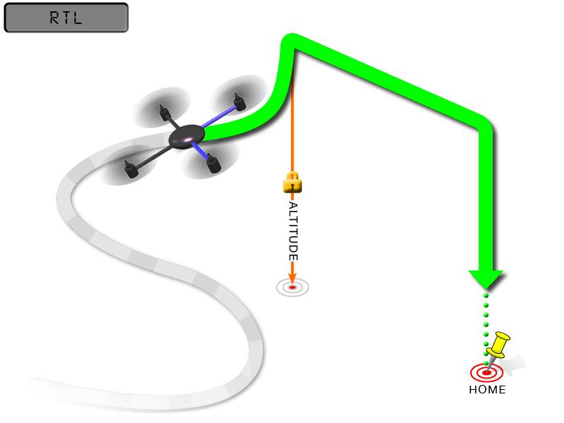

RTL Mode¶
RTL mode (Return To Launch mode) navigates Copter from its current position to hover above the home position. The behavior of RTL mode can be controlled by several adjustable parameters. This page describes how to use and customize RTL mode.
Overview¶
When RTL mode is selected, the copter will return to the home location. The copter will first rise to RTL_ALT before returning home or maintain the current altitude if the current altitude is higher than RTL_ALT. The default value for RTL_ALT is 15m.
{kind=link}
RTL mode requires a reliable position estimate to work properly, most commonly provided by GPS and compass. Default prearm checks will ensure a 3D GPS lock with sufficient HDOP is acquired and your mag is working as expected prior to arming. When using non-default arming checks, make sure you do have a sufficient GPS lock and / or a reliable position estimate for RTL to perform as expected.
RTL will command the copter to return to the home position, meaning that it will return to the location where it was armed. Therefore, the home position is always supposed to be your copter’s actual GPS takeoff location, unobstructed and away from people. For Copter if you get GPS lock and then ARM your copter, the home position is the location the copter was in when it was armed. This means if you execute an RTL in Copter, it will return to the location where it was armed.
Warning
In RTL mode the autopilot uses a barometer which measures air pressure as the primary means for determining altitude (“Pressure Altitude”) and if the air pressure is changing in your flight area, the copter will follow the air pressure change rather than actual altitude (unless you are within 20 feet of the ground and have SONAR installed and enabled).
Options (User Adjustable Parameters)¶
RTL_ALT: The minimum altitude the copter will move to before returning to launch.
Set to zero to return at the current altitude.
The return altitude can be set from 1 to 8000 centimeters.
The default return altitude Default is 15 meters (1500)
RTL_ALT_FINAL: The altitude the copter will move to at the final stage of “Returning to Launch” or after completing a Mission.
Set to zero to automatically land the copter.
The final return altitude may be adjusted from 0 to 1000 centimeters.
RTL_LOIT_TIME: Time in milliseconds to hover/pause above the “Home” position before beginning final descent.
The “Loiter” time may be adjusted from 0 to 60,000 milliseconds.
WP_YAW_BEHAVIOR: Sets how the autopilot controls the “Yaw” during Missions and RTL.
0 = Never change Yaw.
1 = Face Next Waypoint including facing home during RTL.
2 = Face Next Waypoint except for RTL (i.e. during RTL vehicle will remain pointed at its last heading)
LAND_SPEED: The descent speed for the final stage of landing in centimeters per second.
The landing speed is adjustable from 20 to 200 centimeters per second.
RTL_CLIMB_MIN: The vehicle will climb at least this many meters at the first stage of the RTL. By default this value is zero. (only Copter-3.3 and above)
RTL_SPEED: The horizontal speed (in cm/s) at which the vehicle will return to home. By default this value is zero meaning it will use WPNAV_SPEED. (only Copter-3.4 and higher)
RTL_CONE_SLOPE: Defines the slope of an inverted cone above home which is used to limit the amount the vehicle climbs when RTL-ing from close to home. Low values lead to a wide cone meaning the vehicle will climb less, High values will lead to the vehicle climbing more. (supported in Copter-3.4 and higher)
Notes¶
Other navigation settings also have an influence over RTL mode:
To use RTL, GPS lock needs to be achieved (Blue GPS LED and Blue APM LED on solid not blinking) before arming and takeoff to establish the home or launch position.
Landing and re-arming the copter will reset home, which is a great feature for flying at airfields.
If you get lock for the first time while flying, your home will be set at the location of lock.
If you set the
RTL_ALTto a number at other than 0 it will go to and maintain that altitude while returning.RTL uses WPNAV_SPEED to determine how fast it travels.
Once the copter arrives at the home location the copter will pause for
RTL_LOIT_TIMEmilliseconds, timeout (AUTO_LAND), then land.